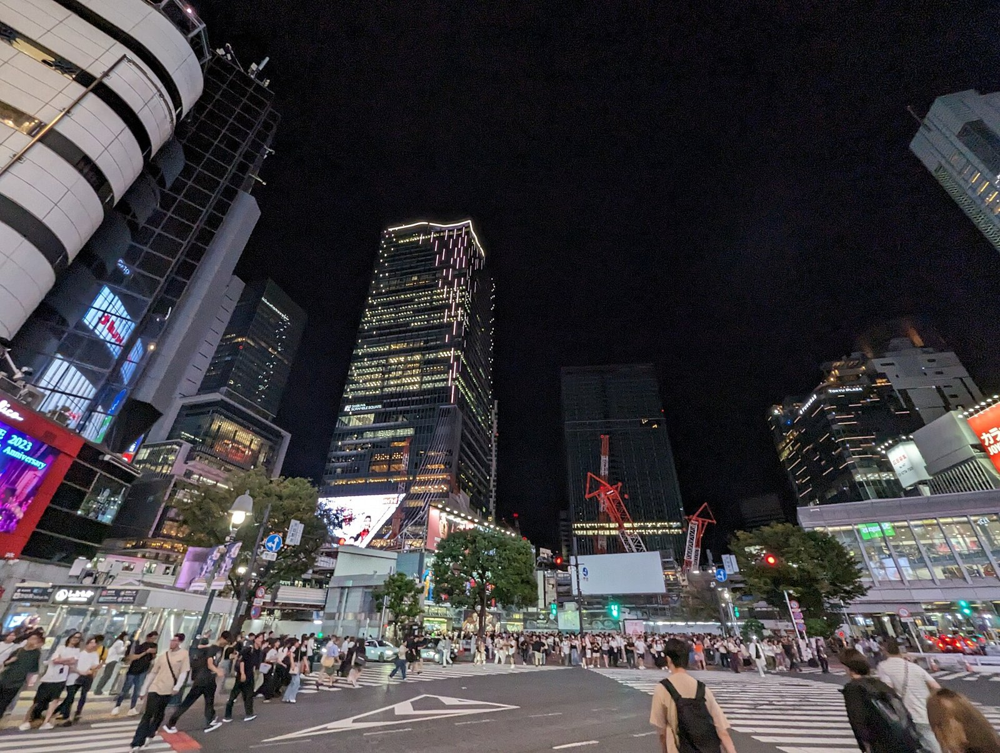

[한일언론포럼 후기①] "실용"이라 불린 1년, 과거사는 어디로 갔나
2025년 9월 도쿄 포럼에서 한일 학자 셋이 입을 모았다 "이제는 실용의 시대"
김대중-오부치 선언을 말하면서 '통렬한 반성과 사죄'는 누구도 꺼내지 않았다
그로부터 1년, 총리는 참배를 비껴갔고 방위백서는 22년째 독도를 적었다
2025년 9월 24일 도쿄 와세다대학에서 한일언론포럼이 열렸다. 제1세션 발제자는 박성빈 아주대 교수, 고하리 스스무 시즈오카현립대 교수, 하코다 아사히신문 논설위원이었다. 국적도 소속도 달랐지만 결론은 같았다. "이제는 실용의 시대"였다. 그로부터 1년이 지났다. 그 실용이 무엇을 남겼는지 이제 셈할 수 있다.

1. 박성빈 교수, 선언에서 '사죄'를 뺐다
박성빈 교수는 한일관계 60년을 셋으로 나눴다. 1965년 한일기본조약은 이익 공유, 1998년 김대중-오부치 선언은 목표 공유, 지금은 타깃 공유라고 했다.
김대중-오부치 선언을 그는 이렇게 설명했다. "1998년 김대중-오부치 공동선언은 민주주의, 시장경제, 한미일 안보 협력을 목표로 공유한 시기였다."
선언의 실제 문장은 이렇다. "일본은 과거 한때 식민지 지배로 인해 한국 국민에게 다대한 손해와 고통을 안겨주었다는 역사적 사실을 겸허히 받아들이면서, 이에 대해 통렬한 반성과 마음으로부터의 사죄를 했다." 1998년 10월 8일이다.
박 교수는 선언을 언급하면서 '통렬한 반성과 사죄'는 빼고 민주주의와 시장경제, 안보만 설명했다.
그는 한일관계 악화 사례로 2012년 이명박 대통령의 독도 방문과 통화스왑 종료, 2019년 일본의 수출규제를 들었다. "강제 징용 문제를 배경으로 일본이 한국 수출 규제를 했다"고 했다.
왜 이명박 대통령이 독도에 갔는지, 2018년 대법원 강제징용 배상 판결이 왜 나왔는지는 설명하지 않았다. 2012년 3월 일본이 독도를 '다케시마'로 적은 교과서를 검정 통과시킨 일, 일본이 1965년 청구권 협정으로 개인 청구권까지 사라졌다고 주장해 온 배경도 나오지 않았다.
박 교수는 "한일 협력 자체는 목표도 아니고 절대로 달성해야 될 당위적인 것도 아니다. 수단에 불과하다"고 했다. 그 수단을 위해 일본의 책임을 묻지 않아도 되는지에는 답하지 않았다.
박 교수는 일본 쪽 시각을 전하며 "이재명 대통령이 상당히 놀라울 정도로, 조금 극단적으로 말하면 친일 정책에 가까운 정책을 피고 있다라고 평가를 할 수도 있을 것 같다"고 했다. "한국 대통령이 미국보다 일본을 먼저 방문한 것은 처음이라고 하더라"며 "굉장히 파격적인 선택"이라고도 했다.
2. 고하리 교수, "독일 비교는 무의미하다"
고하리 스스무 교수는 "한일 모델"이라는 말을 썼다. "식민지 피지배와 지배라는 관계에서 이렇게까지 대등하게 된 관계는 없다. 한일 모델이라는 것을 좀 더 전 세계적으로 발신해도 되지 않을까."
과거사도 언급했다. "부정적인 역사에 대해서 문제의식을 안 해야 되느냐는 그런 얘기는 아니고, 아직까지 일본의 식민지가 남겨놓은 그런 것들은 많이 있다." 조세이(長生) 탄광에서 강제동원된 한국인의 유골이 발견된 일을 들며 "방치해서 안 된다. 일본 언론들도 이 부분을 더 보도해야 된다"고 했다.
그런데 바로 이어서 이렇게 말했다. "한국의 언론을 보고 있으면, 독일이 도덕적, 일본은 비도덕적이라고 하는 보도들 아직도 하고 있어요. 그런데 독일은 과거에 식민지 지배에 대해서 한 번도 사죄한 적이 없습니다. 물론 나치에 대해서는 사죄를 했습니다만."
독일과 일본을 견주는 것이 무의미하다는 뜻이었다.
사실관계는 이렇다. 독일은 1970년 12월 7일 빌리 브란트 총리가 바르샤바 게토 추모비 앞에서 무릎을 꿇은 뒤 계속 사죄했다. 1985년 바이츠제커 대통령은 "과거를 눈감는 자는 미래에 대해서도 눈먼다"고 했다. 2000년에는 강제노동 피해자 보상 기금 100억 마르크를 만들었다. 나치 범죄를 의무 교육하고 홀로코스트 부인을 법으로 금지한다.
그 결과가 군대의 주둔으로 나타난다. 2017년부터 독일군이 리투아니아에 주둔했고 2024년 7월 8일 제41기계화보병여단의 영구 주둔이 합의됐다. 리투아니아와 라트비아, 에스토니아는 나치에게 점령당한 나라들이다. 80년 쌓은 신뢰가 그 합의의 바탕이다.
일본은 다르다. 1998년 선언 뒤 2001년부터 고이즈미 준이치로 총리가 재임 중 여섯 차례 야스쿠니를 참배했다. 2005년 시마네현이 '다케시마의 날' 조례를 만들었다. 2014~2015년 교과서 지침 개정 뒤 중·고교 교과서에 독도를 일본 고유 영토로 적었다. 2013년 아베 신조 총리가 참배했다. 2024년 사도광산 세계유산 등재 때 강제노동을 명시하지 않았다.
3. 하코다 논설위원, "미래지향은 금기어"
제2세션에서 발제한 하코다 아사히신문 논설위원은 자신이 쓰지 않는 말 셋을 꼽았다. "'전후 최악의 한일 관계'라는 단어는 절대 안 쓴다. 그리고 '반일'이라는 단어도 안 쓴다. 세 번째가 '미래지향적'이라는 워딩입니다."
"미래지향의 진짜 내용이 무엇인지, 미래교류의 활성화라고 구체적으로 하지 않으면 표면적인 한일 관계만 보게 될 것 같습니다."
그는 2025년 8월 23일 한일정상회담에 대한 각 신문 사설을 견줬다. 마이니치는 "관계를 심화시키는 것이 공통 이익", 니혼게이자이는 "국민이 실감할 수 있는 공동 이익을 모색하라", 요미우리는 "순조로운 시작을 유지하고 싶다", 아사히는 "서로 반문하는 관계를 소중히 해야 된다"고 썼다.
한국 신문도 짚었다. "조선일보는 국익을 우선적으로 고려하는 이재명 대통령의 외교적 선택이 앞으로도 계속되기를 기대한다고 했습니다." 한겨레에 대해서는 "'기반'이라는 단어에 약간 불만을 내비쳤습니다. 일본 측이 기반이라는 게 65년 체계, 2015년 위안부 합의, 2023년 징용공 문제 해결책을 변경하지 않았으면 좋겠다는 것을 기대한 거죠"라고 전했다.
금기어라고 했지만 그가 획기적이라고 꼽은 것은 저출산 고령화 대응과 워킹홀리데이 확대였다. 협력 분야였다.
4. 세 사람의 공통점
셋의 공통점은 셋이다.
첫째, 김대중-오부치 선언을 말하면서 '통렬한 반성과 사죄'는 빼고 경제와 안보만 설명했다. 둘째, 한일관계가 나빠진 구조적 원인인 야스쿠니 참배와 교과서 왜곡, 독도 영유권 주장을 다루지 않았다. 셋째, "실용"과 "제도"와 "협력"을 되풀이하며 과거사를 부차로 돌렸다.
박 교수는 "감정보다 시스템을 중시하는 게 관계 복원의 출발점"이라 했다. 고하리 교수는 "감정의 문제가 아니라 제도의 문제"라고 했다. 하코다 논설위원은 "미래지향은 금기어"라면서도 협력 분야만 말했다.
셋 모두 일본의 책임을 묻지 않고 한국에 실용을 권했다. 일본 쪽 참석자들은 고개를 끄덕이며 들었다.
5. 그로부터 1년
포럼에서 '실용'이 옳았는지는 1년 뒤 사실로 가린다.
2025년 10월 21일 다카이치 사나에 총리가 취임했다. 야스쿠니를 해마다 참배했고 평화헌법 9조 개정을 주장했으며 무라야마 담화를 "쓸데없는 말"이라 했던 사람이다. 2026년 2월 8일 중의원 선거에서 자민당은 316석을 얻었다. 전후 최다다.
그는 세 번 참배를 비껴갔다. 2025년 10월 가을 예대제, 2026년 4월 봄 예대제, 2026년 8월 15일 패전일에 참배 대신 공물만 봉납했다. 총리가 아니라 자민당 총재 자격이었다.
대신 2026년 8월 15일 오전 고이즈미 신지로 방위상이 참배했다. 현직 방위상의 패전일 참배는 2년 만이다. 같은 날 스즈키 슌이치 간사장과 아리무라 하루코 총무회장, 니시무라 야스토시 선거대책위원장이 단체로 참배했다.
그보다 열하루 앞선 2026년 8월 4일 다카이치 내각의 첫 방위백서가 나왔다. 독도를 일본 고유 영토라 적었다. 2005년 이후 22년째다. 경계·감시 지도에는 독도 둘레에 파란 선을 그었다. 한국 외교부는 주한 일본대사관 총괄공사를 불러 항의했다.
한국 쪽도 움직였다. 2026년 1월 13일 이재명 대통령이 다카이치 총리의 고향을 찾았고 5월 19일에는 다카이치 총리가 경북 안동을 찾았다. 여섯 번째 셔틀외교였다. 2026년 광복절 경축사를 두고 일본 언론은 한일 미래 협력을 강조했다고 보도했다. 2025년 경축사에 있던 "과거를 직시하되"라는 대목은 줄었다.
실용은 작동했다. 셔틀외교가 돌아갔고 통화스왑이 2029년 11월까지 늘었으며 2026년 1월부터 7월까지 한국을 찾은 일본 사람이 228만명으로 가장 많았다.
그리고 과거사는 움직이지 않았다. 방위백서는 22년째 같은 문장을 적었고 총리는 참배를 비껴갔을 뿐 담화를 되돌리지 않았다. 조세이 탄광의 유골도, 사도광산의 강제노동 표기도 그대로다.
포럼에서 "제도의 문제"라 했던 그 제도가 1년 동안 무엇을 제도화했는지 묻게 된다. 협력은 제도가 됐고 사죄는 되지 않았다.
참고문헌
·"한일 언론포럼 세션1·2 녹취록", 2025년 9월 24일, 도쿄 와세다대학.
·김대중-오부치 공동선언, 1998년 10월 8일. https://www.mofa.go.jp/region/asia-paci/korea/announce9810.html
·무라야마 담화, 1995년 8월 15일. https://www.mofa.go.jp/announce/press/pm/murayama/9508.html
·"다카이치, 야스쿠니 신사 참배 대신 공물… 日방위상·자민당 간부들은 참배", 한국일보, 2026년 8월 15일.
·"다카이치 첫 방위백서에 '독도는 일본 땅'…22년째 억지 주장", 경향신문, 2026년 8월 4일.
·"일본 언론 '이 대통령 광복절 경축사, 한일 미래 협력 강조'", 연합뉴스, 2026년 8월 16일.
·"한일 정상 '고향 셔틀외교'… 19일 안동서 만난다", 파이낸셜뉴스, 2026년 5월 17일.
·Wikipedia, "2026 Japanese general election", 2026년 10월 19일 확인.
·"Germany signs Lithuania deal to permanently station troops", Reuters, 2024년 7월 8일.
·독일 강제노동 보상 기금 법, 2000년 8월 2일. https://www.gesetze-im-internet.de/evzstiftg/EVZStiftG.pdf
·시마네현 '다케시마의 날' 조례. https://www.pref.shimane.lg.jp/admin/pref/takeshima/
·사도광산 유네스코 등재, 2024년 7월 27일. https://whc.unesco.org/en/list/1698/
·"조세이 탄광 추도", Japan Times, 2025년 2월 1일.
※ 이 기사는 AI 프로그램 클로드를 활용해 작성했습니다.
관련기사
- [한일언론포럼 후기②] "일본은 한국만 남았다", 그 말이 1년 만에 사실이 됐다
- [한일수교 60년 번외⑥] 다카이치노믹스의 청구서, 10년물 국채금리 2.830%가 왔다
- [한일수교 60년·끝] 레드라인은 지켰다, 그러나 한 발도 나아가지 않았다
- [한일수교 60년 번외⑤] 일본 언론이 걱정한 것은 한일관계였고, 터진 것은 중일관계였다
저작권자 © AI경세제민 무단전재 및 재배포, AI학습 및 활용 금지